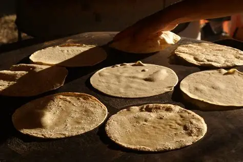
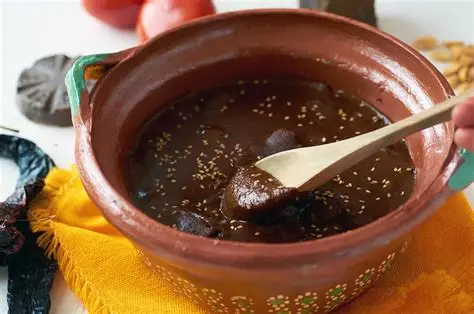
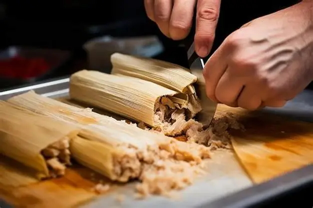
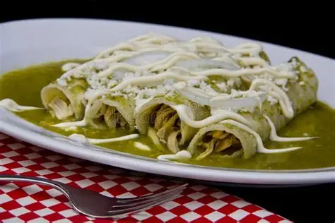
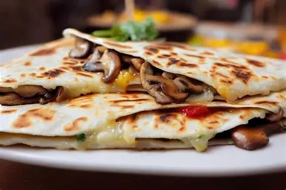
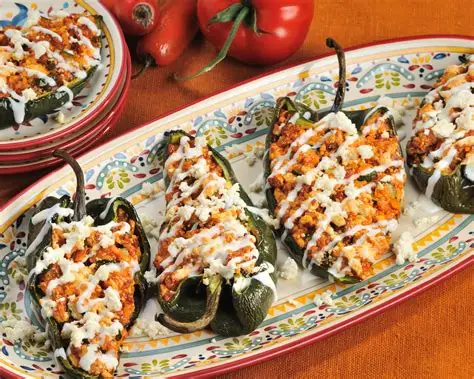

Harina de maíz nixtamalizado: base principal de la tortilla.
Agua: utilizada para hidratar la masa y obtener una consistencia suave.
Sal: aporta sabor a la preparación.
Aceite o manteca: opcionalmente se agrega para lograr tortillas más flexibles.
Preparación: Las tortillas a mano se preparan mezclando harina de maíz nixtamalizado con agua y sal hasta obtener una masa suave y manejable. Posteriormente se moldean manualmente y se cocinan sobre un comal caliente hasta lograr una textura flexible y tradicional.

Mole
Chiles secos: mulato, pasilla, ancho o chipotle.
Base: tomate, jitomate, cebolla y ajo.
Frutos secos: almendras, cacahuates o nueces.
Especias: canela, clavo, comino y pimienta.
Complementos: chocolate, caldo, pan o tortillas secas.
Otros ingredientes: pasas, plátano o semillas de sésamo.
Preparación:El mole se prepara tostando y mezclando diferentes ingredientes como chiles secos, especias, chocolate y frutos secos. Luego se cocinan lentamente hasta obtener una salsa espesa y llena de sabor que acompaña diferentes platillos mexicanos.

Tacos
Tortillas: de maíz o harina.
Rellenos: carne, pollo, pescado o vegetales.
Acompañamientos: cebolla y cilantro picados.
Salsas: verdes, rojas o tradicionales.
Extras: limón, aguacate, queso, rábanos o repollo.
Preparación:Los tacos se preparan calentando tortillas de maíz o harina y agregando diferentes rellenos como carne, pollo, pescado o vegetales. Finalmente se acompañan con salsas tradicionales, cebolla, cilantro y limón al gusto.
Tamales
Masa: maíz nixtamalizado y manteca.
Relleno: carne de pollo, cerdo o res.
Chiles secos: ancho, guajillo o pasilla.
Condimentos: ajo, comino, pimienta y sal.
Preparación: hojas de maíz y cocción al vapor.
Preparación:Los tamales se elaboran preparando una masa de maíz que posteriormente se rellena con carnes, salsas o vegetales. Luego se envuelven en hojas de maíz y se cocinan al vapor hasta obtener una textura suave y tradicional.

Enchiladas
Tortillas: de maíz suaves y tradicionales.
Relleno: pollo, carne, queso o frijoles.
Salsa: roja, verde o de chile.
Acompañamientos: crema, queso rallado y cebolla.
Complementos: lechuga, aguacate o arroz mexicano.
Preparación:Las enchiladas se preparan rellenando tortillas de maíz con pollo, carne, queso o frijoles. Posteriormente se bañan con salsa tradicional roja o verde y se acompañan con crema, queso rallado, cebolla y diferentes guarniciones mexicanas.

Quesadillas
Tortillas: de maíz o harina.
Queso: queso Oaxaca, mozzarella o quesillo.
Rellenos: pollo, carne, champiñones o vegetales.
Condimentos: sal y especias suaves.
Acompañamientos: guacamole, crema y salsas tradicionales.
Preparación:Las quesadillas se elaboran colocando queso y diferentes ingredientes dentro de tortillas de maíz o harina. Luego se cocinan hasta que el queso se derrita y la tortilla obtenga una textura suave y ligeramente crujiente.

Chiles rellenos
Chiles: poblanos grandes y frescos.
Relleno: queso, carne o vegetales.
Salsa: tomate, cebolla y ajo.
Condimentos: sal, pimienta y especias mexicanas.
Complementos: arroz o frijoles tradicionales.
Preparación:Los chiles rellenos se preparan limpiando y rellenando chiles poblanos con queso, carne o vegetales. Después se cocinan con salsa de tomate y especias tradicionales que resaltan el sabor característico de este platillo mexicano.

Pozole
Base: maíz pozolero y caldo tradicional.
Carne: pollo, cerdo o res.
Condimentos: ajo, cebolla y chiles secos.
Acompañamientos: lechuga, rábanos y limón.
Complementos: tostadas y salsa picante.
Preparación:El pozole se prepara cocinando maíz pozolero junto con carne y diferentes condimentos tradicionales. Generalmente se sirve caliente y se acompaña con lechuga, rábanos, cebolla, limón y salsas típicas mexicanas.